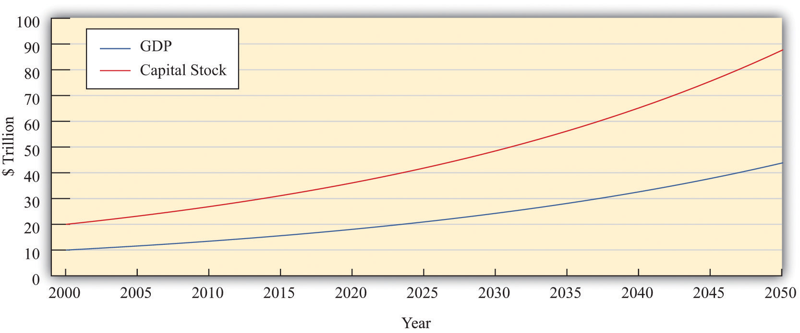
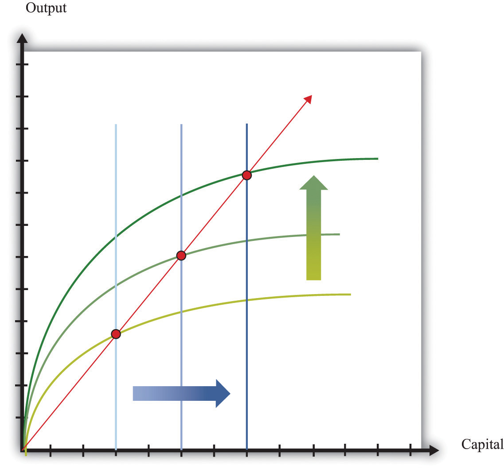
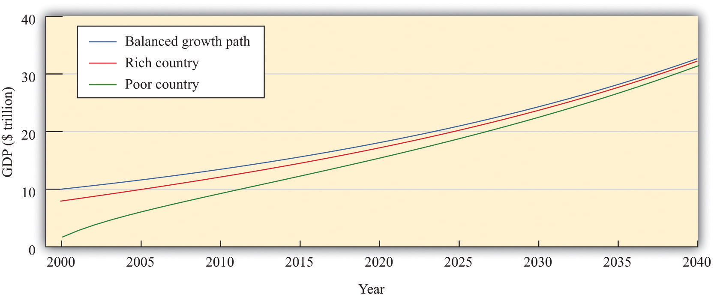
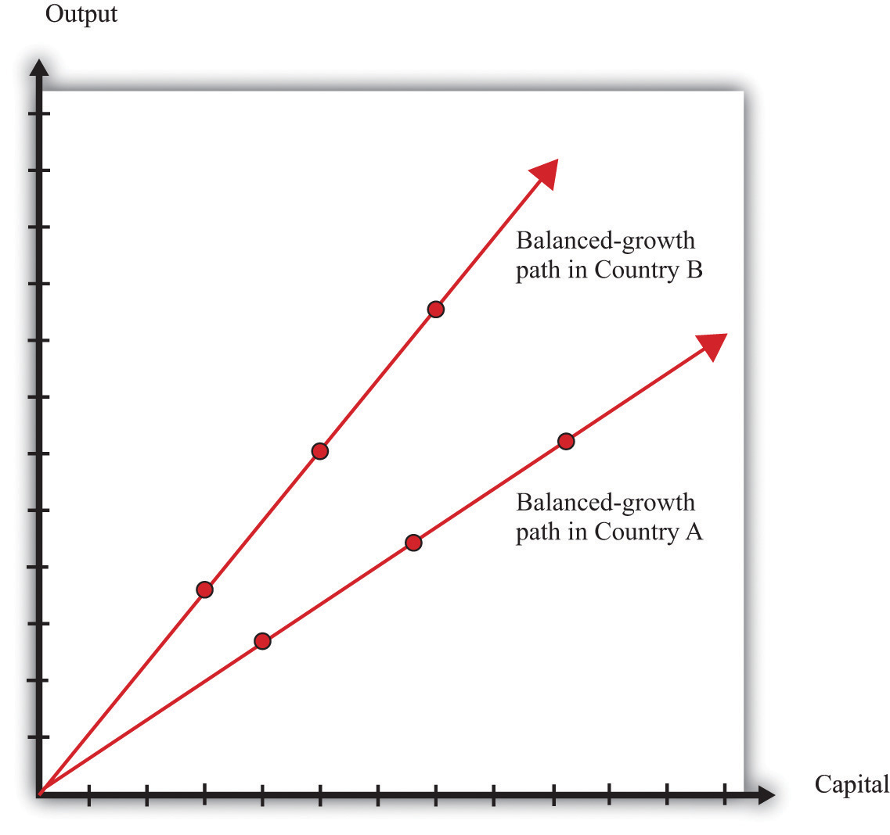

After you have read this section, you should be able to answer the following questions:
We have seen that the accumulation of capital—other things being equal—leads economies to converge over time. However, we saw that the evidence for such convergence in the data is highly mixed. To understand more about when economies will and will not converge, we need a more complete theory of the sources of economic growth. In this section, we develop such a theory and then use it to look again at the question of convergence. We initially take as given—that is, as exogenousSomething that comes from outside a model and is not explained in our analysis.—the growth rates of human capital, the workforce, and the technology.
We begin with the tool of growth accounting. The growth accounting equation for our aggregate production function is as follows:Growth accounting is discussed in more detail in Chapter 20 "Globalization and Competitiveness".
output growth rate = [a × (capital growth rate)] + [(1 − a) × (workforce growth rate + human capital growth rate)] + technology growth rate.Toolkit: Section 31.28 "Growth Accounting"
You can review growth accounting in the toolkit.
In this equation, a is just a number. For the US economy, a is approximately equal to 1/3. Remember that output is just another term for real gross domestic product (real GDP).
It turns out that, in the very long run, we expect the capital stock and the level of output to grow at exactly the same rate. We see why later in this section. Such a situation is called balanced growthWhen the growth rate of the capital stock and the output growth rate are equal.. When this is true, the growth accounting equation then becomesYou don’t need to worry about the mathematical details, but if you are interested, we obtain this equation by setting the capital growth rate equal to the output growth rate:output growth rateBG = [a × (output growth rateBG)] + [(1 − a) × (workforce growth rate + human capital growth rate)] + technology growth rate, which implies (1 − a) × output growth rateBG = [(1 − a) × (workforce growth rate + human capital growth rate)] + technology growth rate.Dividing this equation by (1 − a) gives us the equation in the text.
For example, suppose that a = 1/3, the human capital growth rate = 0.01, the technology growth rate = 0.02, and the workforce growth rate = 0.03. Then
When we are comparing living standards across countries, it is better to adjust for differences in the size of the workforce to obtain output per worker. This is a measure of the overall productivityThe effectiveness of an economy for producing output. of an economy—that is, the effectiveness of an economy for producing output. (Of course, output per worker and output per person are very closely related. For the US economy, the workforce is roughly half the total population, so output per person is therefore approximately half as much as output per worker.) The growth rate of output per worker equals the growth rate of output minus the growth rate of the workforce:
This equation tells us that, in the end, the secret to economic growth is the development of knowledge and skills. Invention, innovation, education, training, and improvements in social infrastructure are the drivers of economic growth in the very long run.
Perhaps surprisingly, the growth rate of the capital stock is not a fundamental determinant of the growth rate. When we have balanced growth, the capital stock grows, which contributes to the overall growth of output. But if we ask what determines the overall growth rate in an economy, it is the growth of technology and human capital. The capital stock then adjusts to keep the economy on its balanced-growth path. By the definition of balanced growth, the growth rate of the capital stock is equal to the output growth rate.
Figure 21.13 Output and Capital Stock in a Balanced-Growth Economy
This picture shows an example of an economy on a balanced-growth path. Both variables grow at 3 percent per year and the capital stock is always equal to exactly twice the level of GDP.
Figure 21.13 "Output and Capital Stock in a Balanced-Growth Economy" illustrates balanced growth. Look first at output. Notice that even though the growth rate of output is constant, the graph is not a straight line. Instead, it curves upward: the change in the level of output increases over time. This is because a growth rate is a percentage change. In our example, output in 2000 is $10 trillion, and the growth rate is 3 percent. From 2000 to 2001, output increases by $300 billion (= $10 trillion × 0.03). By 2050, output is equal to $44 trillion. Between that year and the next, output increases by $1.3 trillion (= $44 trillion × 0.03). Even though the growth rate is the same, the change in the level of output is more than four times as large.
When output and the capital stock grow at the same rate, the ratio of the capital stock to GDP does not change. In Figure 21.13 "Output and Capital Stock in a Balanced-Growth Economy", the value of the capital stock is always twice the value of output. The capital stock and real GDP both grow at the same rate (3 percent per year), so the ratio of the capital stock to GDP does not change over time.
Figure 21.14
Balanced growth means that the ratio of the capital stock to output does not change. On a balanced-growth path, output and the capital stock grow at the same rate, so the ratio of the capital stock to output is always the same: the growth path of the economy is a straight line from the origin.
Figure 21.14 shows what a constant ratio of the capital stock to GDP looks like in our production function diagrams. Along any straight line from the origin, the ratio of the capital stock to output does not change. As a simple example, suppose that (as in Figure 21.13 "Output and Capital Stock in a Balanced-Growth Economy") the capital stock is always twice the level of output. This means that output is always half of the capital stock:
output = 0.5 × capital stock.This is just the equation of a straight line that passes through the origin. In Figure 21.14, increases in human capital or technology shift the production function upward. On the balanced-growth path, capital stock grows at exactly the right rate so that the economy grows along a straight line from the origin.
If an economy is not yet on its balanced-growth path, it will tend to go toward that path. If a country has a small capital stock relative to GDP, then its capital stock will grow faster than real GDP. Countries that are still developing may well be in this position. Countries that are further along in the development process are likely to be (approximately) on their balanced-growth paths. For such countries, the ratio of capital stock to output is unchanging.
Economies that have not yet accumulated enough capital to be on their balanced-growth paths will have a growth rate that equals the balanced-growth rate plus an additional factor due to the growth rate of capital relative to GDP.If you are interested in the mathematical derivation of this equation, you can find it in the toolkit.
The first term is the growth rate along the balanced-growth path. The second term is the additional component to growth that comes about whenever the capital stock is growing faster than output.
Table 21.6 "Approaching the Balanced-Growth Path" gives an example of an economy that is approaching a balanced-growth path. Like the economy in Figure 21.13 "Output and Capital Stock in a Balanced-Growth Economy", the balanced-growth output growth rate is 3 percent. The workforce grows at 1 percent, so output per worker grows at 2 percent along the balanced-growth path. However, this economy starts off (in the year 2000) with a smaller capital stock than is needed for balanced growth. Looking at the first row of the table, you can see that the capital stock grows at 14.4 percent, while output grows at 6.8 percent. Because capital grows faster than output, there is an additional component to growth, as we have just explained. This contributes an extra 3.8 percentage points to the growth rate, so output per worker grows at 5.8 percent.
As time goes on, the capital stock grows relative to output, and the economy gets closer to the balanced-growth path. As this happens, the additional component of growth becomes smaller. For example, in 2010, the capital stock grows at 6.8 percent, and output grows at 4.3 percent. The growth rate of output per worker is 3.3 percent—2 percentage points being the balanced-growth contribution and 1.3 percent due to the faster growth rate of capital stock compared to output. By 2050, the economy is close to balanced growth: output per worker grows at 2.3 percent, with capital stock growing only a little bit faster than output.
Table 21.6 Approaching the Balanced-Growth Path
| Year | Balanced-Growth Output Growth Rate (%) | Balanced-Growth Output per Worker Growth Rate (%) | Capital Growth Rate (%) | Output Growth Rate (%) | Output per Worker Growth Rate (%) |
|---|---|---|---|---|---|
| 2000 | 3.0 | 2.0 | 14.4 | 6.8 | 5.8 |
| 2005 | 3.0 | 2.0 | 9.3 | 5.1 | 4.1 |
| 2010 | 3.0 | 2.0 | 6.8 | 4.3 | 3.3 |
| 2015 | 3.0 | 2.0 | 5.5 | 3.8 | 2.8 |
| 2020 | 3.0 | 2.0 | 4.7 | 3.6 | 2.6 |
| 2025 | 3.0 | 2.0 | 4.1 | 3.4 | 2.4 |
| … | … | … | … | … | … |
| 2050 | 3.0 | 2.0 | 3.8 | 3.3 | 2.3 |
Countries that are well below their growth path will see their capital stock grow rapidly relative to GDP. They will experience relatively rapid GDP growth. Countries that are close to their balanced-growth path will see their capital stock grow more slowly relative to GDP and have a GDP growth rate that is only slightly bigger than the balanced-growth rate. Although the economy will eventually reach its balanced-growth value, this adjustment may take decades. For this reason, we say that the economy will achieve balanced growth only in the very long run.To be mathematically precise, the economy gets closer and closer to its balanced-growth path but never quite gets there. Over a period of decades, it gets close enough that it makes no practical difference.
We can now use our theory of balanced growth to make our earlier argument for convergence more precise. Then we consider whether we might also see convergence from changes in human capital and technology.
Imagine that we are comparing two countries that are identical in almost every respect. They both have the same levels of technology and human capital and the same balanced-growth ratio of capital stock to GDP. However, they have different amounts of physical capital. Suppose that one of the countries has a large capital stock (call it the rich country) and the other country has a much smaller capital stock (call it the poor country).
These two economies will initially have different levels of output and living standards. Our model predicts, however, that these differences will be temporary. Both economies will approach the balanced-growth path. The poor country will grow more rapidly because its ratio of capital stock to GDP will be increasing more quickly as it moves toward the balanced-growth path. Over time, we expect to see the poor country catch up to the rich one. We illustrate this in Figure 21.15 "Convergence of a Rich Country and a Poor Country".
Figure 21.15 Convergence of a Rich Country and a Poor Country
Consider two economies, identical in all respects except that one has a smaller capital stock than the other. The poorer country accumulates capital faster than the richer country and grows faster.
This is exactly the same mechanism for convergence that we saw before. The country with a smaller capital stock will have a higher marginal product of capital and will grow faster because the country is a more attractive place for investment. Because the poor country accumulates capital more rapidly than the richer country, it will grow faster. The two countries will converge to the same balanced-growth path and to the same level of output per person.
So far we have not considered why human capital might change over time. If there are reasons to think that this variable might grow more quickly in poor countries than in rich countries, we have another force that might drive convergence.
In some ways, human capital resembles physical capital. As with the physical capital stock, some accumulation is the result of decisions by governments, and some comes from decisions by private agents. From the government side, it is likely that economies with low levels of human capital might also be economies in which there is a high return to basic education. If literacy rates are low and most children do not receive much education, even straightforward investments in schooling might yield big gains in terms of the ultimate capabilities of the workforce. Governments in poor countries might see big potential gains from investment in education. Private individuals and firms may also perceive that the returns on education are larger in poorer economies. If very few people in the economy have college degrees, an individual might find that a college education yields a very large payoff. By contrast, if the population as a whole is highly educated, it might take a much larger investment to stand out from others.
This discussion is somewhat speculative. Human capital is difficult to measure, and the marginal product of human capital is even harder to quantify. Nevertheless, there are some good reasons to believe that the incentives to invest in human capital are greater in poorer economies. If so, we have another reason to expect convergence.
What about technology? Will it grow faster in poorer economies? The answer depends on which aspect of technology we are talking about.
Differences in knowledge between rich and poor countries are likely to diminish over time. Rich economies are typically close to the technology frontier, meaning that they are using state-of-the-art production techniques. For countries on the technology frontier, growth in knowledge can only come the hard way, through investment in research and development (R&D). Countries inside the technology frontier are typically poorer developing countries. These economies can grow their stock of knowledge simply by importing knowledge from countries at the frontier. Technological advance is much cheaper and easier if you can use others’ inventions and innovations rather than coming up with your own. We therefore expect such countries to have faster growth rates of knowledge. As they become more developed, the growth of knowledge in these economies will slow down to the rate experienced by other countries near the technology frontier. But in the meantime, they will grow faster than rich countries. Technology transfer to developing economies is surely a force leading to convergence of economies.
There is less to say about social infrastructure and natural resources. The amount of natural resources available in an economy is largely due to accidents of history and geography: there is no obvious reason to expect the growth rate of natural resources to be linked to the level of development. Social infrastructure, meanwhile, is a complicated mix of institutions, customs, and other factors. Again, there is no obvious reason to expect social infrastructure to grow more quickly in poorer economies.
Now that we have incorporated human capital and technology into our framework, we can identify some further possible explanations of divergence. Our theory says that economies will converge if they differ only in terms of their initial capital stock. But it is possible that different economies will also have different balanced-growth paths. Figure 21.16 "Balanced Growth in Two Countries with Different Ratios of Capital to Output" shows what this looks like. The ratio of capital stock to output in the very long run depends on a number of different factors, including the growth rate of technology and the growth rate of the workforce. If these differ across countries, then their balanced-growth paths will differ as well, and we will not observe convergence.The toolkit presents a complete model of balanced growth, including a formula for the balanced-growth ratio of capital stock to output.
Figure 21.16 Balanced Growth in Two Countries with Different Ratios of Capital to Output
Economies may have different balanced-growth paths. In this example, the ratio of capital stock to output is higher in country A than in country B.
This explanation—and our previous stories of divergence—tells us why different economies will not necessarily end up at exactly the same level of output per worker. But the problem of divergence is in some ways worse than that. Some countries are not only failing to converge but also moving further and further apart. In other words, in some cases, richer economies are growing faster than poorer economies. Indeed, as we saw with Niger, some of the poorest economies in the world have been shrinking rather than growing.
Remember that the growth rate of output per worker on a balanced-growth path is as follows:
We can explain divergence in our framework if human capital or technology is growing more slowly in poor countries than in rich ones. Are there reasons to expect this to be the case? Earlier, we said that countries with low levels of human capital might also be countries where the return to human capital investment was large, which is a force for convergence. We also pointed out, however, that the marginal product of physical capital might be larger in an economy with a superior technology, even if that economy had more capital. The same is true of human capital. Countries can build up their human capital through schooling and training. They can also build up their human capital by attracting skilled workers from other countries. If richer countries are able to attract skilled workers, then we will see divergence rather than convergence.In Chapter 20 "Globalization and Competitiveness", we discuss how economies actively seek to attract human capital.
Turning to technology, divergence in social infrastructure is certainly a possibility. Social infrastructure includes the rule of law, the general business climate, social attitudes toward corruption, the protection of property rights, and many other intangible factors. These influences on economic growth are difficult to define and almost impossible to measure accurately. Yet economists are convinced that successful economies must have a good set of such social institutions. It is likely that it is easier to build and improve such institutions in countries that are relatively prosperous, which would again lead richer countries to grow more rapidly than poorer countries.
Economists have built some of these ideas into the theoretical framework of economic growth. Unfortunately, the models are too complicated for an introductory economics textbook, so we will not go into them in any detail here. We can, however, provide a simple example that conveys the flavor of these more complex ideas. The story goes as follows. We know that workers acquire human capital through education and on-the-job training. Suppose that, when there is more physical capital in the economy (relative to the number of workers), it is easier to acquire human capital. You can study in modern facilities with up-to-date computers. You work with state-of-the-art machinery and become more skilled. In this story, human capital is endogenousSomething that is explained within our analysis.: it depends on the amount of physical capital.
To be concrete, imagine that technology is constant, and the amount of human capital is proportional to the amount of physical capital per worker. When we incorporate this assumption into the production function, we end up with a very straightforward relationship:
output = B × physical capital,where B is just a number.The derivation of this equation is not very difficult; it is explained in the toolkit.
In this economy, the ratio of capital stock to GDP is constant at all times (capital/output = 1/B). This economy is always on a balanced-growth path. Because of this, the growth rate of output equals the growth rate of capital stock:
output growth rate = physical capital growth rate.The more important point, though, is that this technology does not exhibit diminishing marginal product of capital. The marginal product of capital is constant: it equals B. If this number were different in different economies, then we would expect to see capital stock flowing from economies where B is small toward economies where B is large. We would see divergence rather than convergence.
The model that we have described in this subsection is simplistic. Its point is simply to show that, if we make human capital endogenous, it is much easier to explain divergence. Economists have built more complicated and realistic models with endogenous human capital and technology that give similar results.